第二关
直接搜4字节的精准值，按按钮不断变小。锁定一个值，拉下来，改到1000
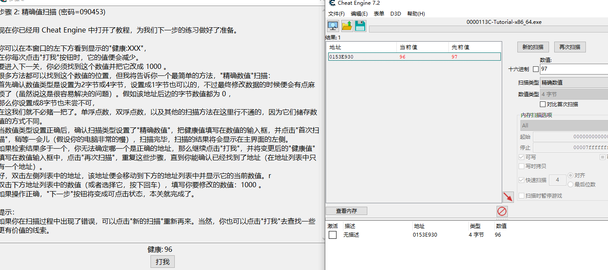
第三关
先设置扫描不确定的未知值，不断点击按钮，发现减去数字，在设置减少了多少。即可快速锁定值，改到5000。通关
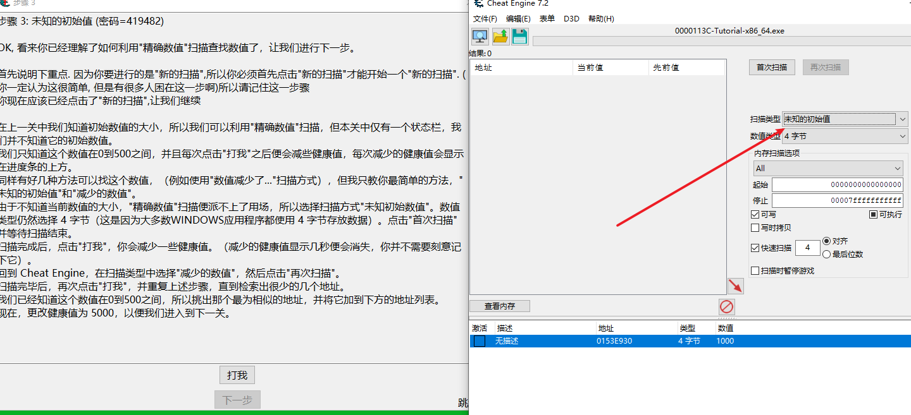
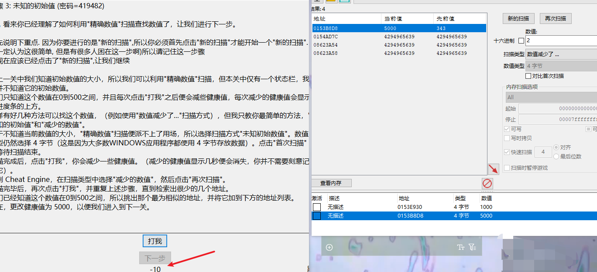
第四关
单双浮点数，切换->改写
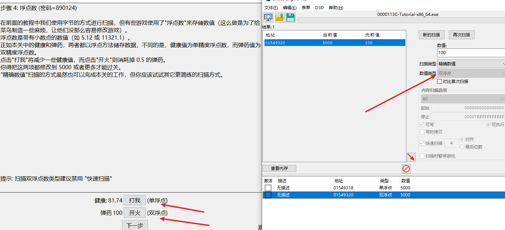
第五关
找到地址，F6（改写了这个地址），显示反汇编。把代表替换成nop
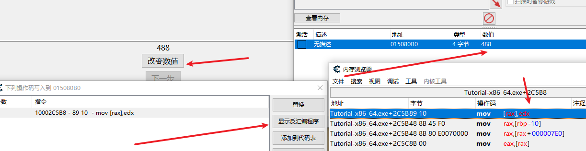
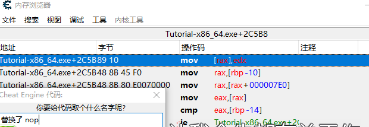
第六关
搜地址找到绿色的静态地址。添加地址，复制刚才的静态地址即可
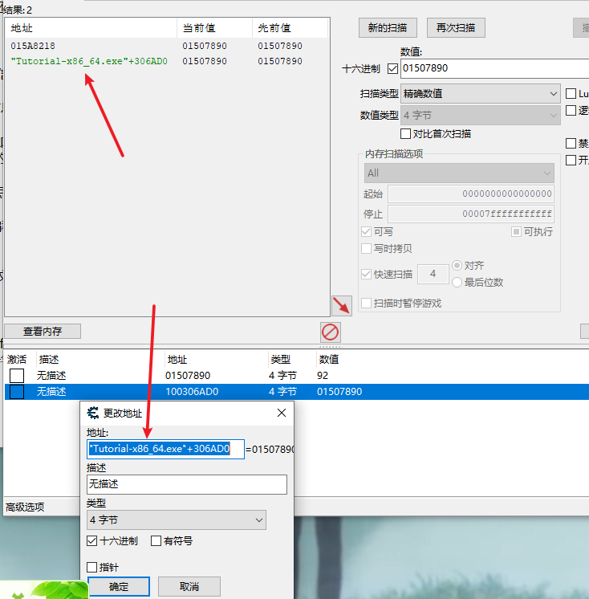
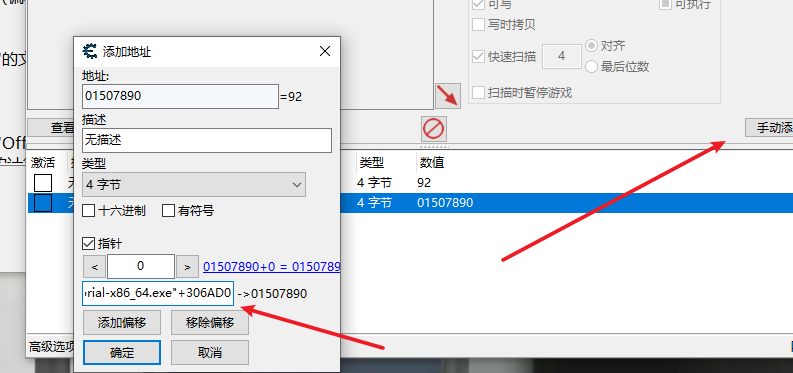
第七关
找到地址，F6（改写了这个地址）。反汇编，ctrl+a呼出自动汇编，把sub那句注释掉，加上add并把后面的数字改为2，即可实现点击按钮+2。
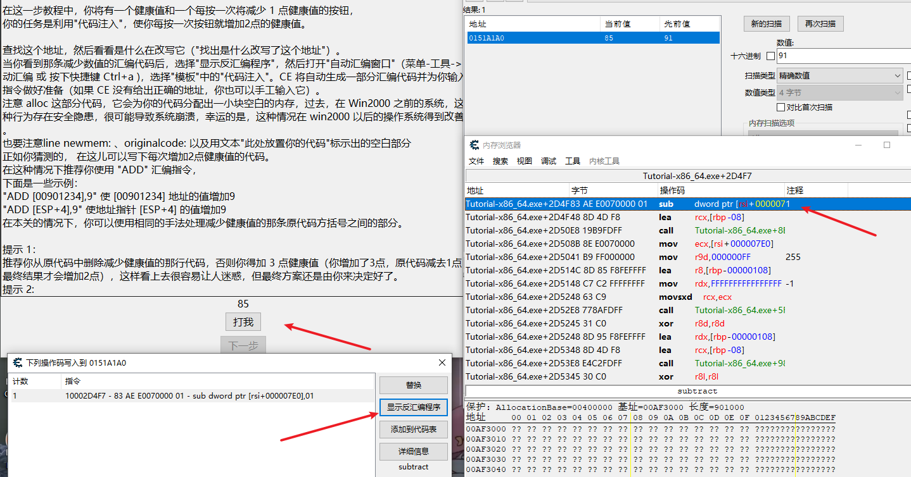
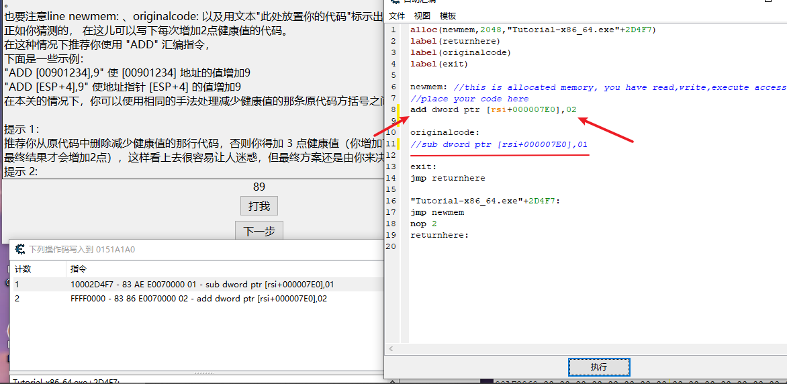
第八关
4重指针，不断指向。不断跳转。
找到值，F5（访问的地址）。找偏移。计算器计算
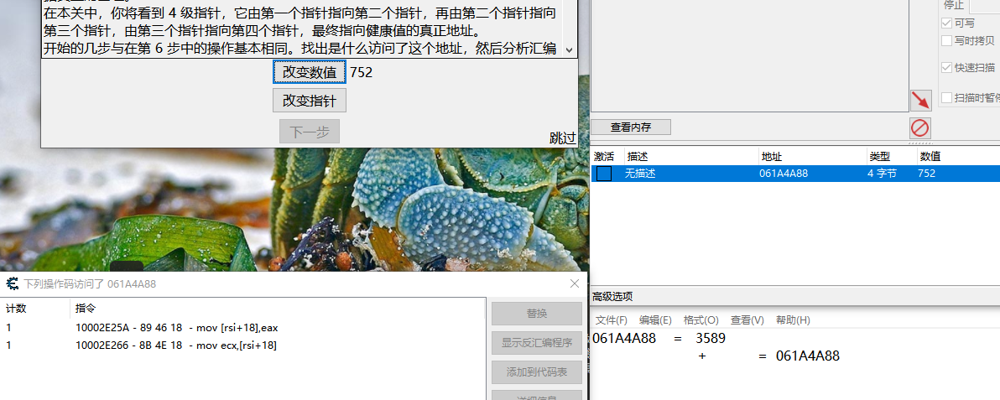
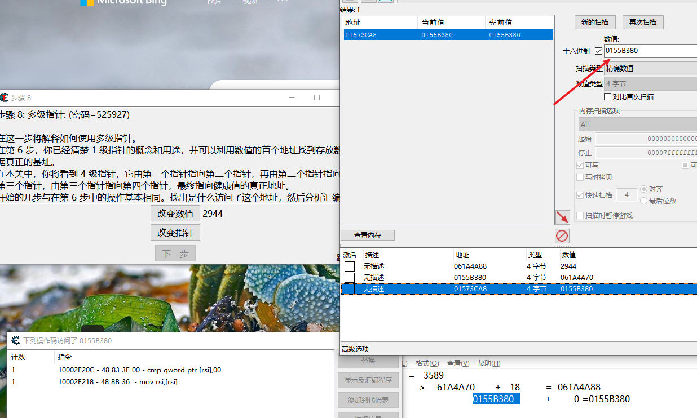

这步就是添加地址，添加每一个指针的不同偏移
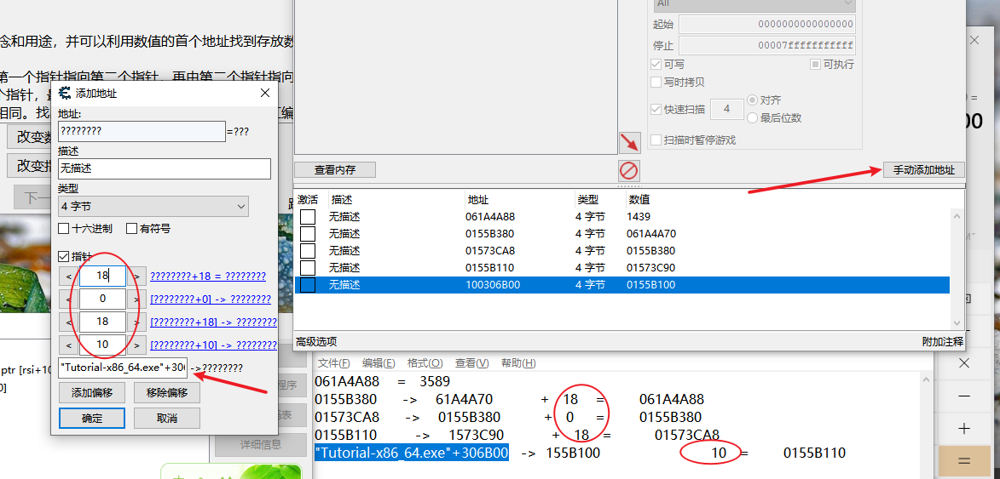
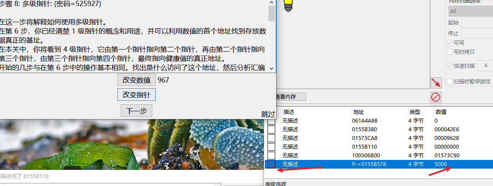
第九关
点到查看内存，偏移为4，上方工具栏呼出结构分析。把地址列表里每个列表-4填入，ctrl+n生成结构
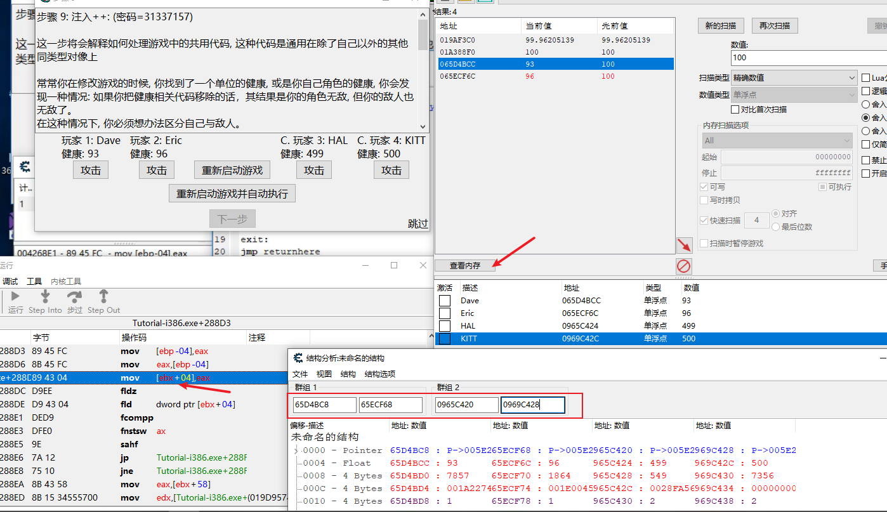
可以看到机器人的team为2。自己的为1
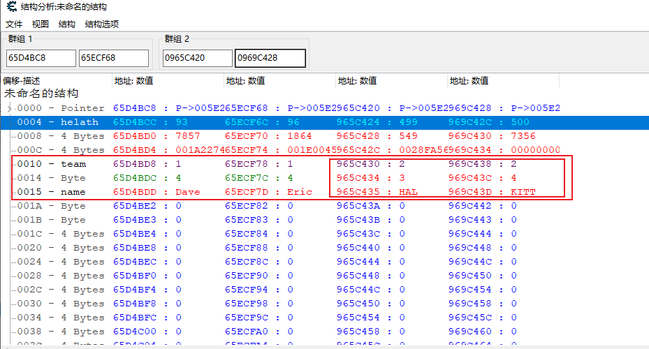
自动汇编，比较team是否为2，为2就把0赋值给eax，health变为0，直接死亡
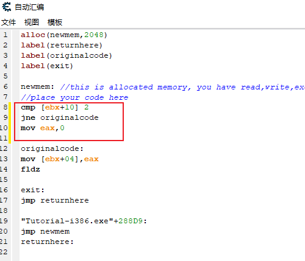
这是另一种方法，F5给当前地址下断点，在点击攻击按钮，查看esi的变化。自己时esi不为1
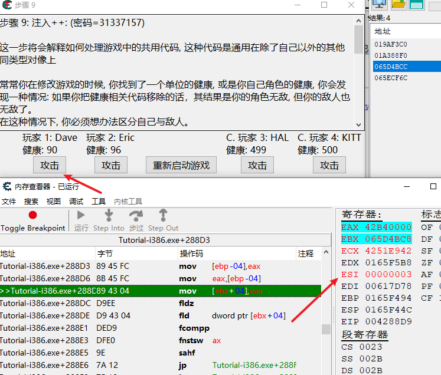
当机器人的时候，esi都是1
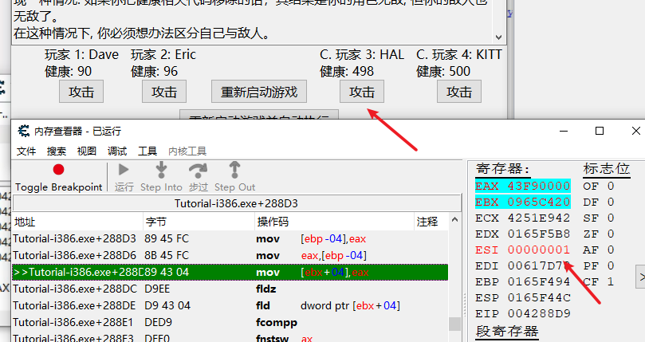
机器人的时候，esi还是1
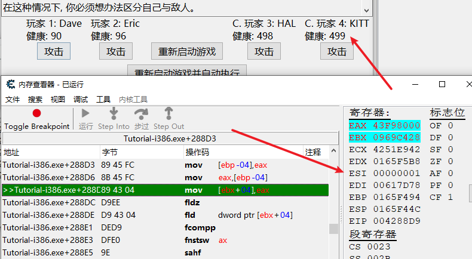
把esi和1比较，查看是否是机器人，如果是，就把0赋值给eax，health变为0
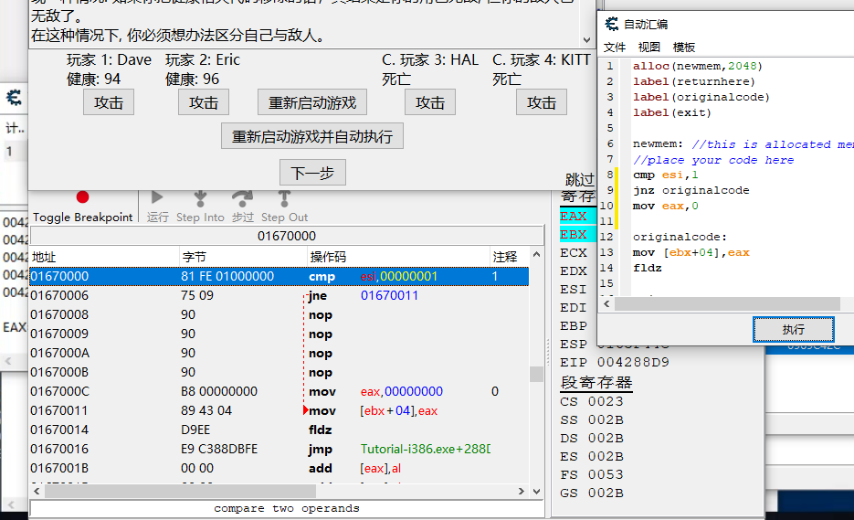